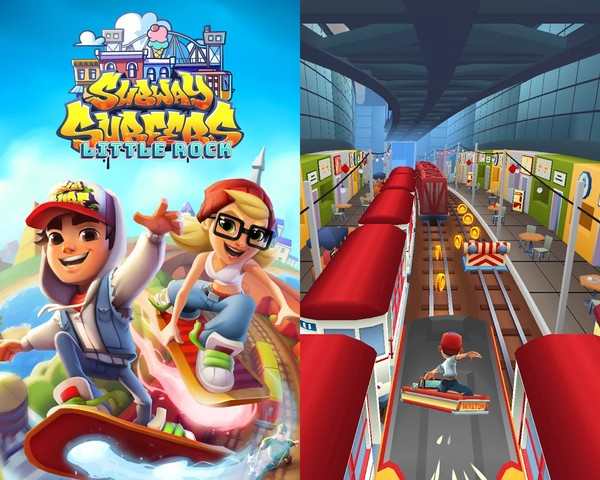
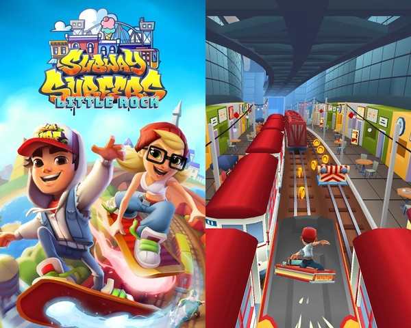

Galeria Subway Surfers
Subway Surfers é um dos jogos mobile mais populares do mundo. Nele, os jogadores correm pelos trilhos do metrô, coletam moedas, desviam de trens e desbloqueiam personagens e pranchas especiais.
Esta galeria reúne imagens do jogo, incluindo personagens, cenários e itens icônicos. Substitua as imagens por versões oficiais do jogo ou artes criadas pelos alunos.

 
